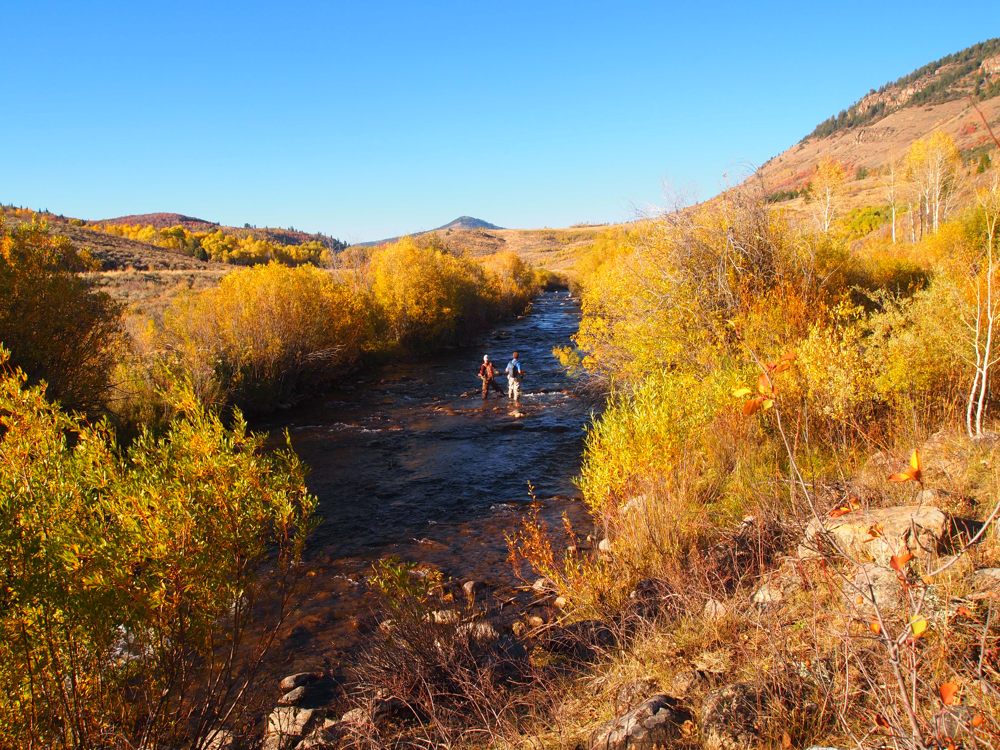
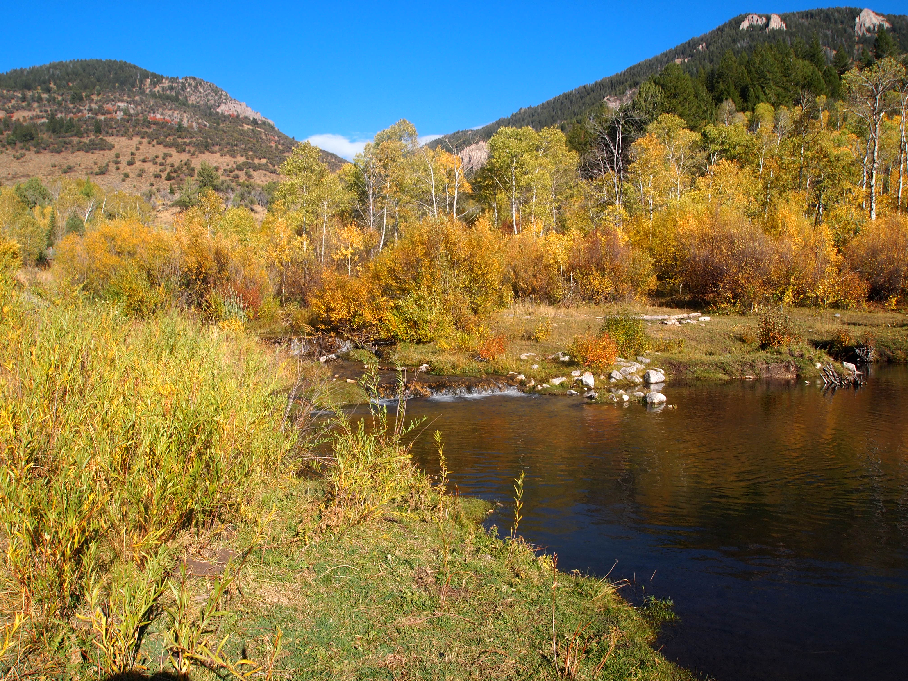
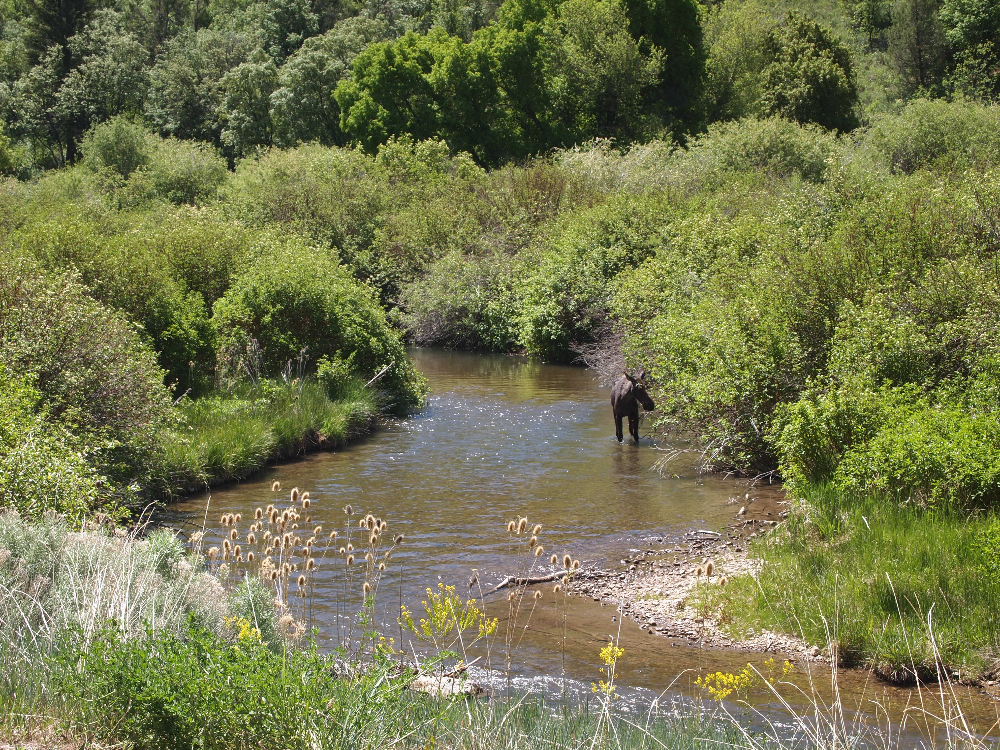
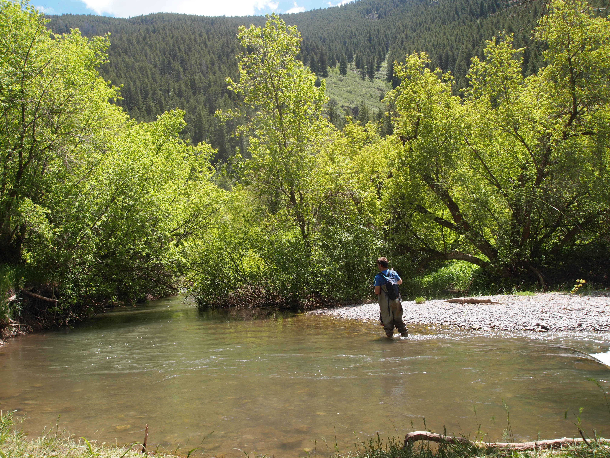
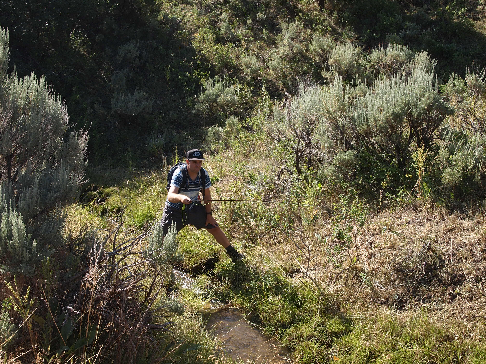
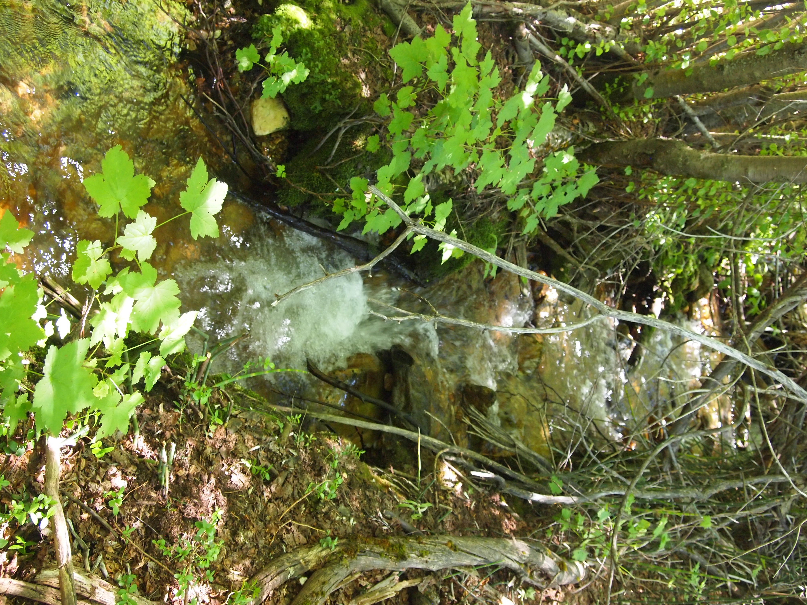
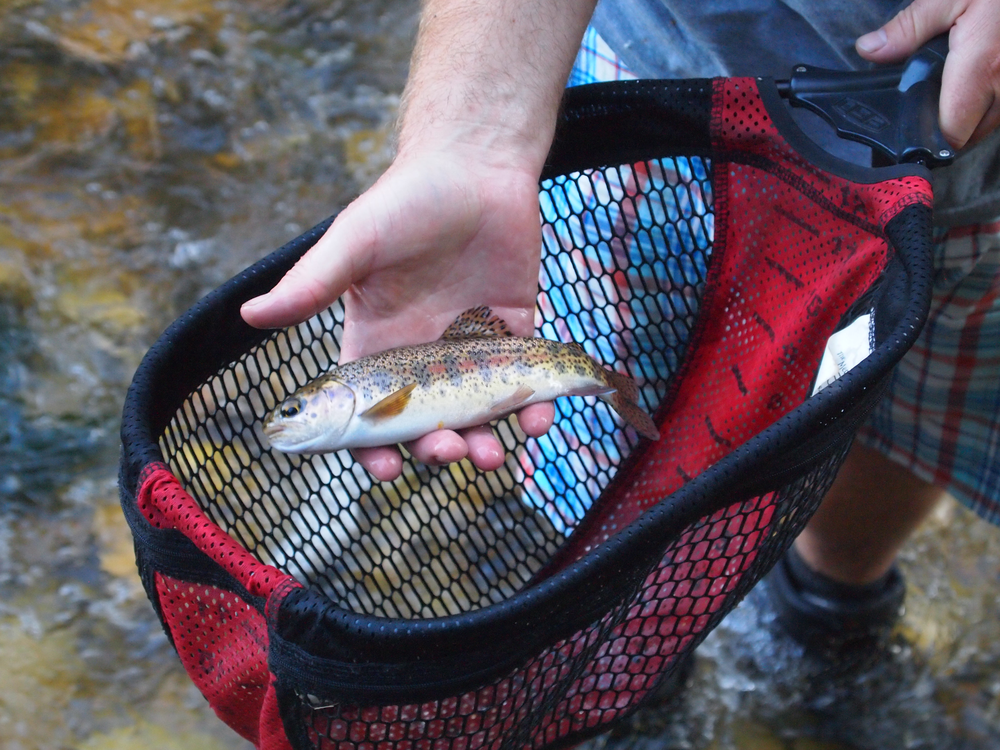
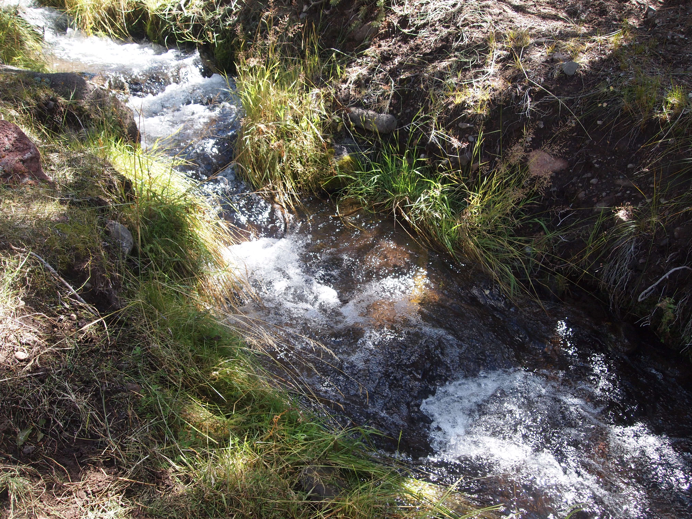
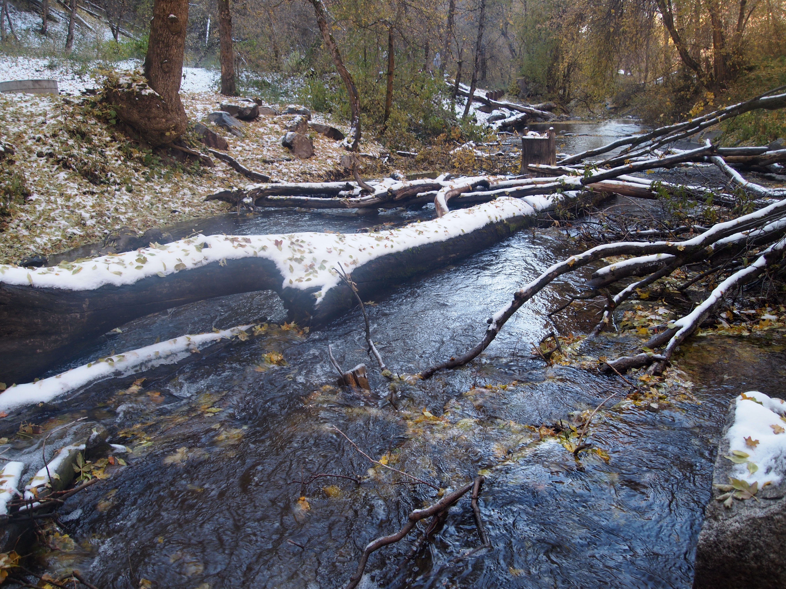

Utah Cutthroat Slam
Bear River Cutthroat–Cache Valley
In Cache Valley, there are a number of options for catching the Bear River cutthroat as all local waters contain them. The Logan River is the largest river, and most obvious. It’s a classic western free-stone trout stream, fishable from about early July through early November. In most places, the Logan is no more than knee deep, though there are some larger holes.
Brown trout, and even some brook and rainbow trout also exist in the Logan, but the higher one goes in the canyon, the more likely it is one will catch a cutt. I mentally divide the river into lower, middle, and upper sections. I think of the lower section as from the mouth of the canyon where a small lake exists (locally referred to as “first dam”), to about Card Canyon, where there is a picnic area and turnout on the highway. From there, the middle section flows close to the road in most places in a tight canyon until the road climbs high above the river, referred to as the “dugway.” I’d never heard that term until I moved to Utah, and I’m still not sure what it means, but the road cuts across the face of a mountain and climbs until it once again meets the river. Temple Fork flows into the Logan shortly after the dugway. The upper part of the Logan is my favorite area to fish as the river is usually a little farther away from the road, and the fishing and scenery are good. However, this area probably receives the most pressure, though pressure on the Logan is minor compared to most well-known western trout streams.
I almost always fish above about Card Canyon (haven’t had much success lower), and the middle canyon section is mostly brown trout. My experience has been that after the dugway, in the upper section, there are more cutts than browns. The fishing is generally good on drys, especially in mid to late summer. Current regulations prohibit fishing from Red Banks Campground upstream to Idaho until the second weekend in July, though in a good water year the river will be still be blown out by then.
Near the top of the canyon, the Logan River leaves the highway and flows almost due north-south from its headwaters in Idaho. This area is referred to as Franklin Basin, and there is a good forest road that parallels the river in this area with lots of dispersed camping, though it can get crowded. Beaver Creek flows into the Logan from the northeast at the start of Franklin Basin (moving upstream) and the highway flows alongside of it after leaving the Logan.
 Franklin Basin in the fall.
The Logan in Franklin Basin, Beaver Creek, and the Temple Fork are almost excluisvely cutts and have good fishing. I’ve had a lot of success in Franklin Basin, and in Spawn Creek, which meets Temple Fork a mile upstream of Temple Fork’s confluence with the Logan. A short hike up Spawn Creek offers nice beaver ponds, but I sometimes find the fish here can be surprisingly picky. I’ve never seen anyone else fishing Spawn Creek. I’ve had less success in Temple Fork, though I have caught fish in it. A lot of it is pretty brushy, and the more open parts don’t seem to hold a lot of fish, so I generally prefer Spawn Creek. Franklin Basin is also brushy in parts, especially farther upstream, but there are a lot of fish in there.
 Beaver ponds on Spawn Creek.
Lower down, Right Hand Fork flows into the Logan from the right hand side of the highway (moving upstream), and is all cutthroats. There is a good forest service road up some of Right Hand Fork, and a campground near the junction of two forest roads. There is also a trail that continues up Right Hand Fork, following the creek for about 1.5 to 2 miles. Right Hand Fork seems to be a popular place to catch cutts. There are a few promotional videos online of media personalities and DWR employees talking about the slam and where to catch Bear River cutts, and it often looks like they are in Right Hand Fork.
The creek is separated from the mainstem Logan by a weir built a few years ago to protect it from encroaching browns. Right Hand Fork was then treated in 2013 to kill the browns and replanted with cutts sometime after. When I started fishing it in 2016, it was full of cutts and once I figured out how to deal with the brush, there were days when I caught dozens of fish. Since then, the fish seem to have become a little bit smarter so the fishing does not seem as good, although fish densities are very high. The other problem with Right Hand Fork is that is a very small and brushy stream for much of its course near the road and trail, so it can be difficult to find a spot to cast. Rattlesnakes and moose are hazards.
 Right Hand Fork in the fall.
Right Hand Fork in the fall.
Having said all that about the Logan and its tributaries, I caught my Bear River in Curtis Creek, which flows through Hardware Ranch WMA into the Blacksmith Fork. The Blacksmith Fork is the second largest river in the valley, and the fishing is great in mid summer. Because it’s smaller, it also clears from runoff a lot earlier than the Logan, making it fishable by mid-June in an average/good water year. Unfortunately, probably about 90% of the fish in Blacksmith Fork are browns (or at least the ones I’ve caught). In fact, the DWR has a bonus limit of four additional brown trout, meaning you can catch and keep eight brown trout per day (as of 2023).
The ratio of cutts to browns in Curtis Creek is better than the mainstem Blacksmith Fork, probably something like 4 to 1 rather than 9 to 1. For my cutt slam, I caught the fish in mid-April as Curtis Creek drains a small area and is probably the first creek in the area to clear from runoff. Rock Creek, which flows into Blacksmith Fork a little lower, also has some cutts and clears relatively early as well. If one drives on the forest road through Hardware Ranch, the road eventually meets Rock Creek again higher up. It’s easy to park near the bridge and fish up the meadow, or move downstream and fish through some smaller meadows and into a small canyon. I’ve done this a few times and caught a lot of fish (mostly browns). The only drawback is that it’s about an hour drive from Logan each way so I don’t fish it that often, though neither does anyone else. In the spring and summer, there is a lot of dispersed camping in the area and people like to use the forest road through Hardware Ranch to see how fast they can drive their side-by-sides.
 A local enjoying the Blacksmith Fork river.
The other option for a Bear River cutt is Left Hand Fork of the Blacksmith, which flows past a number of campgrounds on Left Hand Fork road. This is one of my favorite places to fish early in the season (before Memorial Day) because it clears early and there are a lot of fish, but it’s almost all browns, in my experience. Unfortunately the quantity of dispersed camping and campgrounds means it is overrun by Memorial Day, and the area is an absolute nightmare during the height of summer. I’ve nearly experienced dog attacks and ATV crashes on Left Hand Fork Road. People seem to enjoy dropping their trailer or tent in a spot and reserving it for the entire summer. The forest service has made some efforts to better organize the dispersed camping and enforce the 14 day stay limit, though as far as I can tell, these efforts do not yet seem to be effective.
 Left Hand Fork of Blacksmith Fork.
If I were trying to catch the Bear River cutt, I’d probably start in the upper Logan or Franklin Basin, and failing that, go to Right Hand Fork. The fishing in the Logan and Franklin Basin is easier because they are bigger waters and there is more room to cast and wade. But, if those two didn’t work for whatever reason, Right Hand Fork is almost a sure thing if you can find a spot to make a cast without spooking the fish or get tangled in the brush. Spawn Creek is also a good option, but it requires a 15 to 20 minute hike up to the beaver ponds, and there are brooks and browns in addition to cutthroats.
Yellowstone Cutthroat–Raft River Mountains
This is widely accepted to be the most difficult fish in the slam to catch. For most people, the Raft River Range is the farthest drive, the creeks are tiny, and there isn’t a ton of information on where to catch the fish. Some of the online promotional videos I’ve seen show people fishing water in private land or only make vague references to access points. I couldn’t figure any of this out so I stuck to the most obvious water: Onemile Creek. There is a forest road that goes up it, and my research seemed to suggest this was the best bet.
When I drove up the forest road, there was a jeep parked in a turnout: another guy and his wife also looking to catch the Yellowstone for their slam. From that turnout, they mentioned there is a relatively well-defined hole only a short walk up the creek where they’d brought a fish up. Onemile creek is very small and doesn’t even look like it can hold fish, but unlike a lot of creeks this size in Utah, it wasn’t that brushy. I started downstream of the hole they mentioned, fished up to it, and had absolutely no success. I hooked a shockingly large fish in that hole, got it to the surface and lost it. I made a few more casts, but it was clear the fish wasn’t coming back. I continued fishing up Onemile Creek for a while, and found no signs of life.
 Onemile creek is small.
At that point I wasn’t sure what to do. Downstream of the turnout where I first parked, there was another bad looking forest road that went across the creek and into another drainage. The creek just seems to be called Sawmill Canyon and I wasn’t sure it was even fishable, but I had read that it held Yellowstone cutts. I also wasn’t sure if I could get my car up the road so I rode my mountain bike on the road over a short hill and then up the canyon. I picked an arbitrary point to take the quick hike down to the creek from the road. Sawmill Canyon was even smaller than Onemile and was very brushy.
This all seemed futile as I started fishing but pretty quickly thought I had some fish hitting my dry fly that I let sink in some of the holes. I wasn’t entirely sure they were bites, but it did give me motivation to keep fishing. Within less than an hour, I caught a small Yellowstone cutt out of Sawmill. I caught a few more, all smaller than 6 inches. The fishing isn’t easy, but there seem to be more fish than in Onemile, and I think it gets less pressure. It wasn’t all that hard to get to either, the walk/bike in was maybe a mile or mile and a half.
 Sawmill Canyon is small and brushy.
There is a nice forest service campground nearby on Clear Creek, along with lots of dispersed camping. We were going to try and summit Bull Moutain the next day (highest point in the Raft River Range), but it started thunderstorming early in the morning so we left and drove back to Cache Valley. Clear Creek is quite fun to fish as there are a ton of fish that seemed to look like cutts, but I think they are Inland Redband trout, as they are missing the orange slash under the jaw and have a pink lateral stripe. The DWR’s website does not mention Clear Creek as a possible water in which to find Yellowstones.
 Trout from Clear Creek. I think these are Inland Redband trout.
Colorado River Cutthroat–Boulder Mountain
Living in Cache Valley is an advantage for reaching the Bear River and Yellowstone cutts (the Raft River is less than a two hour drive), but it is a decided disadvantage for the next fish I attempted to catch, the Colorado River cutt. This one is probably slightly easier to catch than the Yellowstone, but the geography of its native waters make it a long trip from Cache Valley. I had a trip planned to the Capitol Reef area for some hiking, so I did research on streams near the park entrance that might hold Colorado River cutts. When we visit Capitol Reef we like to stay at a nice forest service campground about a half hour from the park entrance. The DWR website lists Pine Creek as close to that area so I started there with really no other plan if that didn’t work. Pine Creek flows off the northwest side of Boulder Mountain, but access is at a low enough elevation that isn’t too far of a drive from Bicknell.
 Pine Creek, near Bicknell, UT.
I could find almost no information on the fishing aside from that single mention on the website so I had no idea what the road condition was, how big the creek was, or where to fish. The road turned out to be a good forest service road that I drove up until I found a spot to pull over and walk to the creek. Where I parked, the road isn’t alongside the creek so you can’t see the water until you get closer. Surprise, surprise, Pine Creek is tiny with what I would characterize as “moderate” brush (a running theme for Utah fly fishing). But, on walking up to the creek, I could see fish!
Despite the look of the creek, it was relatively easy fishing; I walked upstream, found a brush-free spot, made a cast with a dry fly, and usually hooked a small fish. I caught a few quickly and had a nice time working my way upstream. I had plans to leave and fish the Fremont which is supposed to hold larger brown trout but as I was packing up after fishing Pine Creek, I stepped on my rod and broke it. I didn’t realize this until I drove to the Fremont, made a cast, and the top of my rod flew off. That was something like the third time I’d broken a rod, and there would be (and will be) more.
Bonneville Cutthroat–Salt Lake City Area
I left the Bonneville for last as I assumed it would be the easiest. I am in Salt Lake City often enough that I thought I’d just catch it quickly when in the area. Unfortunately, by the end of the summer, I just hadn’t gotten around to it. After an airport run, I thought I’d just go to one the creeks that flows out of the Wasatch into the valley. The closest water to the airport I could find was Mill Creek, which is right above the City and holds Bonnies according to the DWR website. I’d never been up there so I had no idea what the fishing was like.
It turns out Mill Creek Canyon is a very popular place to recreate on a Sunday afternoon. And, you have to pay to recreate in the canyon on the way out, which seems very odd. I fought traffic, found a place to park on the road, and walked down to the creek. This was late September and I was surprised to find a little snow on the ground because the sun doesn’t reach the creek in the fall or winter months. The shadows, combined with the warmish air temperature which caused the snow to melt and re-freeze, produced maximum slickness when wading.
 Mill Creek.
Also, unsurprisingly, Mill Creek is tiny and moderately brushy, and it looked just okay in terms of fishability. The low light in the canyon made it difficult to see my dry fly and for about the first hour, nothing happened. This was all very annoying because the Bonnie was supposed to be the easy one. I began thinking the DWR made a mistake and regretting my decision to fish Mill Creek. I finally hooked a fish, after a tough, cold wade. On the way out, I had to sit in traffic waiting to pay the fee. I completed the cutt slam in one year, but I feel comfortable saying that will be my last visit to Mill Canyon.
I probably should have gone to a larger, nicer river to catch the Bonnie and most anglers will drive from Salt Lake City to the north slope of the Uintas to catch the fish there, or fish the Ogden or Weber. All are good options; Mill Creek has the advantage of being twenty minutes from SLC, but the experience is not what we think of in terms of western trout fishing.
Summary
Relative to the other state slams I’ve done or attempted, Utah was the easiest, and is a good starter slam. The driving distances are likely shorter than in Wyoming, and the fishing is pretty easy with the exception of the Yellowstone Cutt. The Bear River and Bonneville should, more or less, be gimmes, with the Colorado River somewhat tougher (though I got lucky Pine Creek was a good spot for me). Catching the Yellowstone out of Sawmill Canyon felt like a miracle, especially after having zero success in Onemile. There are other creeks listed on the DWR website that hold Yellowstones, but my impression is that they require significantly more effort to reach, or flow mostly through private land. I had a hard time figuring out access points. If I were going back, I would give myself some backup options if neither Onemile nor Sawmill worked. The most obvious seems to be Johnson Creek, which I’ve read recently is a good option, and there have been reports of anglers catching large Yellowstones from that water. It is farther from Clear Creek Campground however, and I don’t know what access is like.